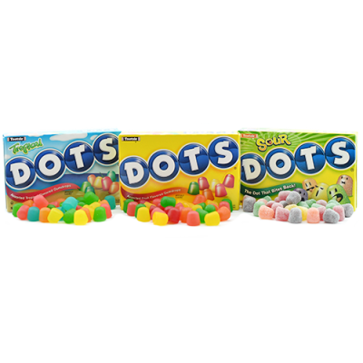

Welcome to Dots Candy Flavor Page

Current flavors for "Original Dots" include cherry (red), lemon (yellow), lime (green), orange (orange), and strawberry (pink).Sour Dots have five flavors, but are created with citric acid: cherry, lemon, orange, grape, and green apple. Flavors for Tropical Dots include Island Nectar, Wild Mango, Grapefruit Cooler, Carambola Melon, and Paradise Punch; and for Yogurt Dots, Banana, Orange, Blackberry, and Lemon-Lime.Crows, black licorice flavored gum drops, are also considered to be part of the Dots family, created in the 1890s by confectioners Ernest Von Au and Joseph Maison. There is an urban legend that Crows were supposed to be called "Black Rose", but the printer misheard the name as "Black Crows" and printed wrappers with the wrong name on them. However, research—including the fact that the name was copyrighted before the candies ever came with wrappers—reveals that this story is not true
Tootsie Roll has many other themed flavors for special occasions. These are special for holidays; Christmas, Holloween, Valentines and Easter, to name a few.